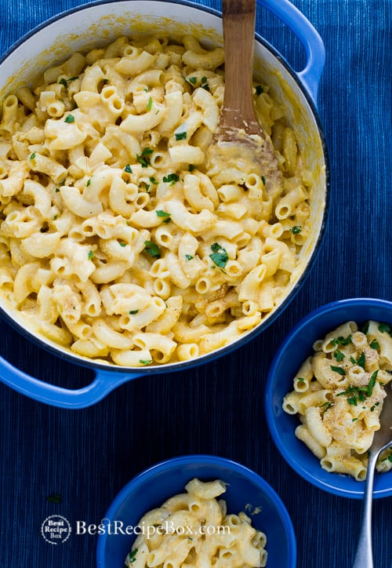

Creamy Macaroni and Cheese

Description
As you might have noticed I have a soft spot for macaroni and cheese, here is an easy recipe that's creamy and full of comfort. All you need to do is to prepare the cheese mixture in an oven proof pot to make it easy. Then the mac and cheese goes directly into the oven. If you don't have an oven proof pot, then after you've made the cheese mixture with the pasta, just transfer it to an oven proof baking dish. And in less than an hour, you'll have one of the easiest and most delicious creamy mac and cheese recipes ever! For everyday if you're up to eating it that often!
Ingredients
- 16 oz package macaroni
- 1/2 cup butter
- 1 onion
- 1/4 cup flour
- 3 cups milk
- 16 oz cheddar cheese
- 1 cup grated parmesan cheese
- 1/4 cup bread crumbs
- Minced parsley for topping (optional)
Cooking Instructions
- Preheat oven to 375°F. Grease a large 9-inch x 12-inch baking dish - see headnote.
- Boil pasta to al dente according to package instructions.
- While the macaroni pasta is cooking, prepare the cheese and milk mixture. In large pot on medium heat, add butter and onion. Cook onions until soft, then add flour, stirring quickly to combine the flour and onion mixture. Break up all the flour clumps.
- Add milk and continue stirring to make sure the flour dissolves completely. Allow mixture to come to a boil and sauce will thicken. Remove from heat and add cheddar cheese and about 3/4 cup of the parmesan cheese (reserve remaining 1/4 cup parmesan cheese for topping).
- Drain your cooked pasta and add to cheese mixture. Gently mix together and pour into baking dish. Add remaining 1/4 cup parmesan cheese and bread crumbs on top.
- Bake for 20-25 minutes or until cheese is melted with a nice crust. Top with minced parsley, if desired.